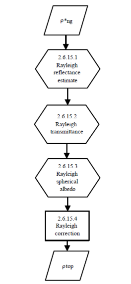

| The BRR Processing Tool |
|
The Rayleigh Correction processing is organised in several steps. First the Rayleigh reflectance is computed for every 4x4 pixels window. Then, Rayleigh transmittance and Rayleigh spherical albedo are computed for every 4x4 pixels window. Then, the TOA apparent reflectance corrected for gaseous absorption ρng is corrected for Rayleigh contributions for each pixel in order to derive the top of aerosol reflectance rtop. The 4x4 pixels windows do not overlap.

The underlying algorithms are presented in detail in the MERIS Level 2 Detailed Processing Model [1].
[1] Bourg, L. (2009): MERIS Level 2 Detailed Processing Model. ACRI-ST, Document No. PO-TN-MEL-GS-0006, 15 July 2009.